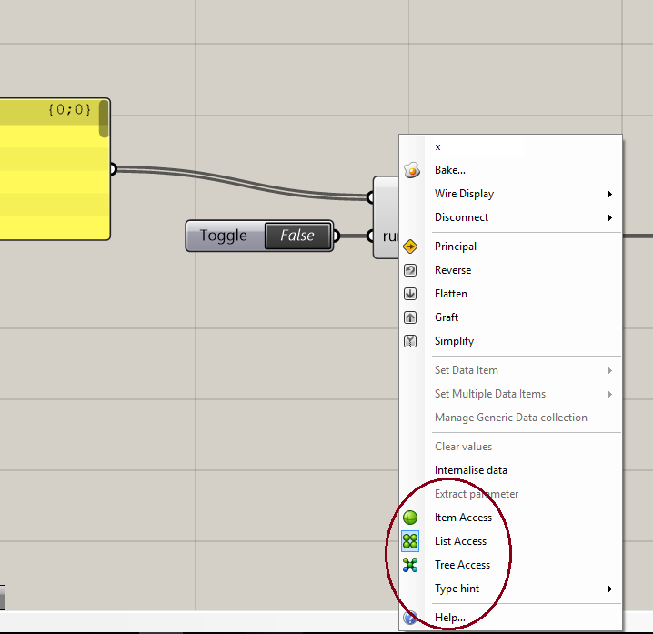
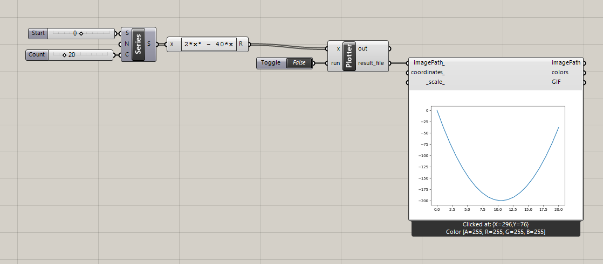

Welcome to the second tutorial! In this tutorial we will create a component that can plot a graph with Matplotlib and NumPy. If you heard of Python, you have probably heard of NumPy as well. NumPy is a library that can handle numerical operations in Python. NumPy is super fast and is relying heavily on C code, which makes it very hard (if not impossible) to use in IronPython. Matplotlib is a plotting library, which works very well together with NumPy. The syntax of Matplotlib resemble Matlab's, which makes it easy to use.
We will use the image viewer from Ladybug Tools to view the plot when finished, so make sure to download it first. Ladybug Tools can be found here. Important is to not download the [+] version, be get the legacy plugins. If you are not going to use Ladybug Tools again, you can also just download the viewer here
Grasshopper Component
We will make the Graph Plotter component, by modifying the component from the first tutorial. We just need to modify the component a little bit. You can start by opening the "1 - My First Component.gh" and save it as: "Graph Plotter.gh". There we can start changing the component. We do not need the y input on the component, so you can start removing that. Thereafter, double click the component and change the write_file function to:
def write_file(file_path, x):
file = open(file_path, 'w')
for value in x:
file.write(str(value) + '\n')
file.close()
Here we loop over the input and saves each value on a new line in the data file. We should change the file locations and the stuff inside the if statement:
# Specify paths
txt_file = folder + '/data_file.txt'
template_file = folder + '/plot_graph_template.py'
result_file = folder + '/plot.png'
# Run functions
if run:
write_file(txt_file, x)
write_template('plot_graph', folder)
run_template(py, template_file)
We are done coding the component now. The only thing missing is to change the x input to a list and add an output. By default all inputs to the Grasshopper Python Scripts Component is set to "item". We do not want that, in this case. You change it by right-clicking the x and a menu will appear. In the bottom you can see "List Access". Click on that. 
We also need the location of the plot, so create and extra output and call it: "results_file". Then the variable with the same name will be outputted there.
The full script in the component, looks like this:
#------------------------------------------------------------------------------#
# Imports
import os
import scriptcontext as sc
import subprocess
import livestock3d
#------------------------------------------------------------------------------#
# Functions
def write_file(file_path, x):
file = open(file_path, 'w')
for value in x:
file.write(str(value) + '\n')
file.close()
def write_template(template, path):
livestock3d.pick_template(template, path)
def run_template(py_exe, template_to_run):
thread = subprocess.Popen([py_exe, template_to_run])
thread.wait()
thread.kill()
def load_file(file):
file = open(file, 'r')
lines = file.readlines()
file.close()
return lines
def print_lines(lines):
for line in lines:
print(line.strip())
#------------------------------------------------------------------------------#
# Execution
# Get CPython path from the other component
py = str(sc.sticky["PythonExe"])
# Make folder
folder = r'C:/livestock3d/data'
if not os.path.exists(folder):
os.mkdir(folder)
# Specify paths
txt_file = folder + '/data_file.txt'
template_file = folder + '/plot_graph_template.py'
result_file = folder + '/plot.png'
# Run functions
if run:
write_file(txt_file, x)
write_template('plot_graph', folder)
run_template(py, template_file)
Template
The template can also be easily copied from my_first_template() We just need to change the function we call from: "my_function()" to "plot_graph()"
def plot_graph(path):
"""
Writes a template.
:param path: Path to write it to.
:type path: str
:return: The file name
"""
file_name = r'/plot_graph_template.py'
file = open(path + file_name, 'w')
file.write("# Imports\n")
file.write("import sys\n")
file.write("sys.path.insert(0, r'C:\livestock3d')\n")
file.write("import livestock3d as ls\n")
file.write("# Run function\n")
file.write("ls.plot_graph()\n")
file.write("# Announce that template finished and create out file\n")
file.write("print('Finished with template')\n")
file.close()
return file_name
CPython
Let us open livestock3d.py at
C:\livestock3d
First we need to import Numpy and Matplotlib. We do that with:
import numpy as np
import matplotlib.pyplot as plt
We create a new function at the bottom of the file called: "plot_graph()" It takes a folder path as input. We can uses NumPy's loadtxt() to load our data. loadtxt() is a easy way to read a file, containing data, even larger amounts. We store the data from the file in the variable called "y_values". Besides y_values, we also need a series of x_values. We create a series from 0 to the length of y_values with NumPy's linspace.
In the end we use Matplotlib to plot out a graph and save it with the name "plot.png"
def plot_graph():
y_values = np.loadtxt('data_file.txt')
x_values = np.linspace(0, len(y_values), len(y_values))
plt.figure()
plt.plot(x_values, y_values)
plt.savefig('plot.png')
return None
Run Component
Now we can head back to Grasshopper. Remember to restart Rhino before proceeding. Now we just needs some numbers to put into the component. You can generate in whatever way you want. In the image below, I have used a series component and an expression component to generate a polynomial. Connect the numbers to your component. Drag Ladybug Tools' Image Viewer onto the canvas and connect "result_file" from the graph component to "imagePath". Connect a boolean toggle to run and let the magic happen!
